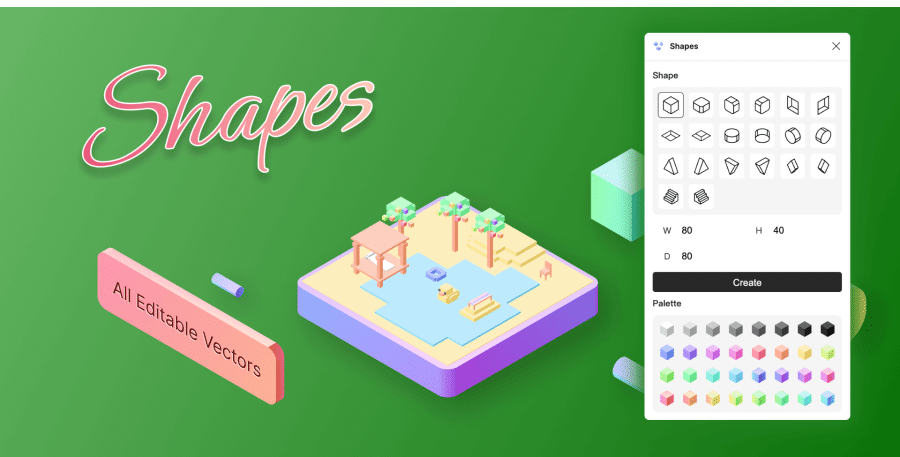

Vol.47：如何快速在 Figma 中设计 3D 元素
Hello，欢迎阅读我的周刊第 47 期。
这周回归上班，没有什么特别的感想，就分享几个 Figma 插件吧。Figma 做 UI 设计确实强，但是要做 3D 元素就比较麻烦了，如果没有其他软件的辅助，就得借助插件来实现了。
3D Vector
https://www.figma.com/community/plugin/1268139850904385517/3d-vector
快速将文字、矢量图形转换成 3D 效果，可以修改厚度、角度和颜色等参数。
Fast Isometric
https://www.figma.com/community/plugin/1249759048471403961/fast-isometric
快速创建立方体，预设 4 种角度，支持修改立方体尺寸和颜色。

Shapes
https://www.figma.com/community/plugin/1256475795987389620/shapes
快速生成预设形状的体块,支持修改参数。

Shapes 3D
https://www.figma.com/community/plugin/1266663542116780385/shapes-3d
快速将矢量图形转换成 3D 效果，预设镜面、磨砂、玻璃、金属等多种渲染效果。
Simple3D
https://www.figma.com/community/plugin/1260632020336566834/simple3d
类似 Adobe Illustrator 的 3D 功能。

3D Transformer
https://www.figma.com/community/plugin/1009780509659307229/3d-transformer
支持调整图片或 frame 的角度、比例、圆角、透视程度。
Fig3D
https://www.figma.com/community/plugin/946020080871644950/fig3d
能调整光影渲染效果的 3D 插件。
订阅： 本站所有内容首发于 tangweijuan.com，支持 RSS 订阅，同步更新于微信公众号「Afterwork Time」，欢迎扫描下方二维码订阅。